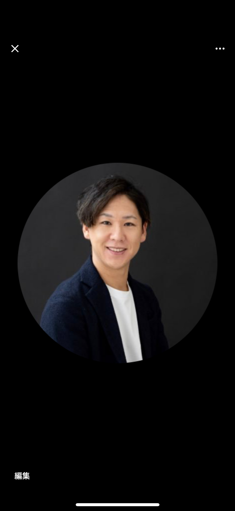

Googleマップの情報と写真を整える
OKAYAMA / WEB & DIGITAL SUPPORT
見つかる伝わる続けられる
Googleマップで入口を整え、LPでお店やサービスの良さを伝えます
- 岡山県内は対面対応
- 全国オンライン対応
- 専門用語は使いません
01見つけてもらう
02選ばれる理由を伝える
03無理なく続ける
REDIFE
作る人と、相談する人が変わりません
01
OUR ROLE
小さなお店・会社のデジタル担当
見つけてもらう入口づくりから日々の面倒を減らす仕組みまで
Googleマップ、LP制作、毎月の情報更新を一人の担当者がつなげて支援します。商品ありきではなく、今いちばん困っているところから整理します。
02
SERVICES
見つけてもらう入口から
必要な順番でひとつずつ整える
全部を一度に変える必要はありません。お客様に見つけてもらい、良さが伝わり、公開後も続けられる流れをつくります。
03
FLOW
つながる3つの段階
見つかるだけで終わらせない
サービスや事例をLPで分かりやすく見せる
毎月の投稿や口コミ返信を支援する
04
WORKS
制作実績
実際のページを見てから相談できる
画像を選ぶと、実際に制作したWebサイトが開きます。


FREE DIAGNOSIS
集客と業務の詰まりを無料で整理します
30〜60分ほどお話を伺い、優先して整えたい点を3つまでお伝えします。
- 01LPやGoogleマップの状態
- 02時間を取られている作業
- 03手をつける順番
05
PRICE
料金の目安
必要な部分から小さく始める
単体でも、公開後の継続支援とセットでも選べます。
伝える場所をつくる
01LP制作
単体15万円
顧問とセット5万円
LPは作っただけでは届きません。公開後の運用まで続けてお任せいただけるため、セット時は最初の制作費を抑えています。
見つけてもらう場所を整える
02Googleビジネスプロフィール
単体5万円
顧問とセット0円
Googleマップは、多くのお店にとってホームページより先に見られる場所です。
毎月、人が見て整える
03デジタル顧問
月額2万5千円
Googleマップの投稿や口コミ返信、相談対応を毎月同じ担当者が支援します。
最低3か月・以降1か月更新詳しい作業範囲と条件は、正式な料金ページで確認できます

06
PROFILE
運営者について
作る人と相談する人が変わりません
山本 健太
Web制作・SEOのディレクターとして6年。宿泊施設、建築事務所、サウナ施設などのサイトを手がけてきました。
最初のご相談から公開後の運用まで、同じ人間が直接お受けします。
Instagramで活動を見る ↗07
FAQ
よくあるご質問
相談前に気になること
01対応エリアはどこまでですか
岡山県内は直接お伺いします。撮影を伴わないご依頼であれば、全国どこでもオンラインで対応します。
02顧問契約は途中でやめられますか
最初の3か月だけお約束いただき、その後は1か月ごとの更新です。
03ホームページがなくても大丈夫ですか
はい。Googleマップの整備から始め、必要に応じてLPを制作できます。
04AIを使うんですか
下書きなどには使いますが、お客様にお出しするものは必ず人の目を通します。
FREE DIAGNOSIS
今の状態を一緒に確認しませんか
ページが必要かどうかも含めて、一緒に考えます。